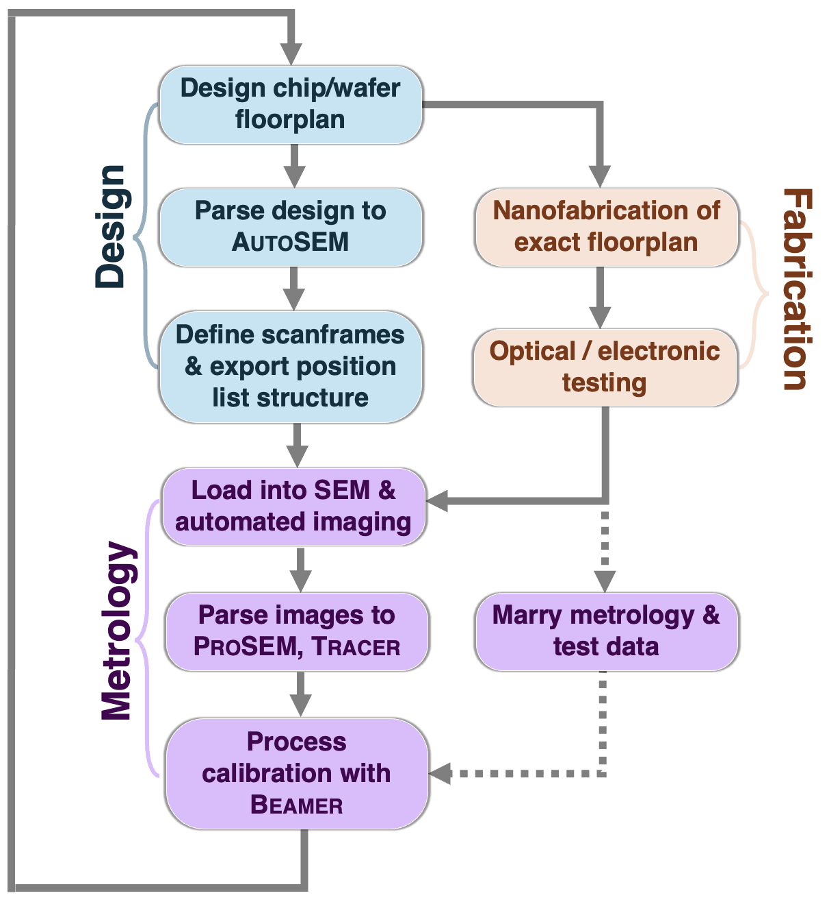
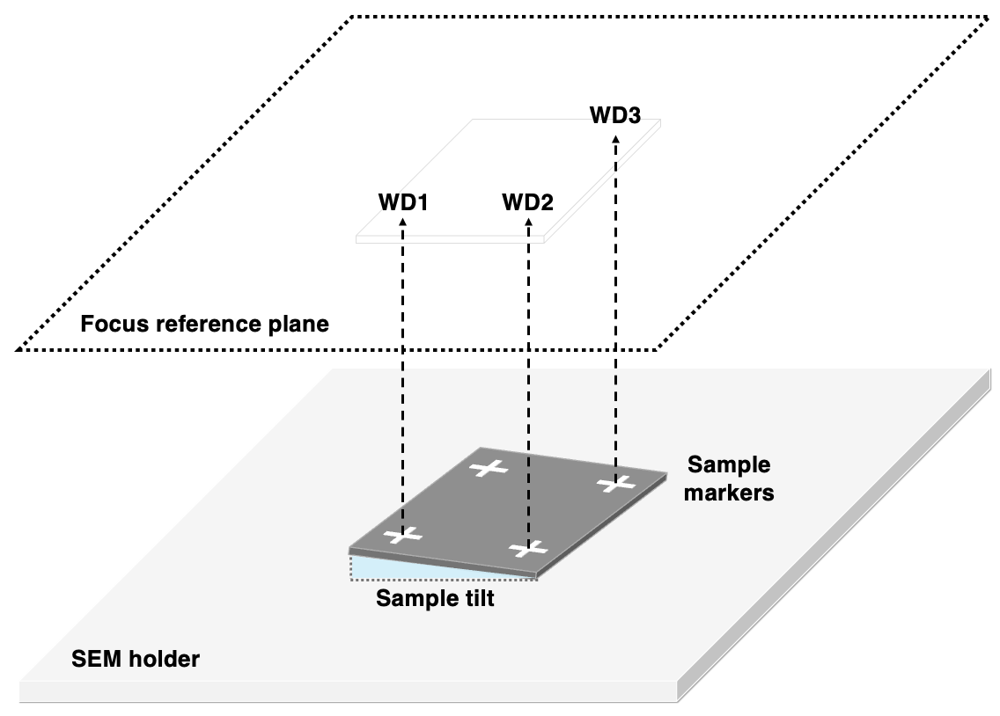
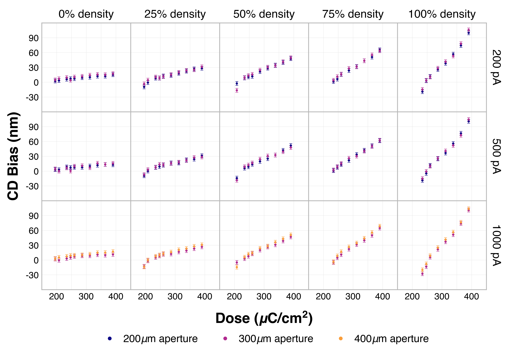
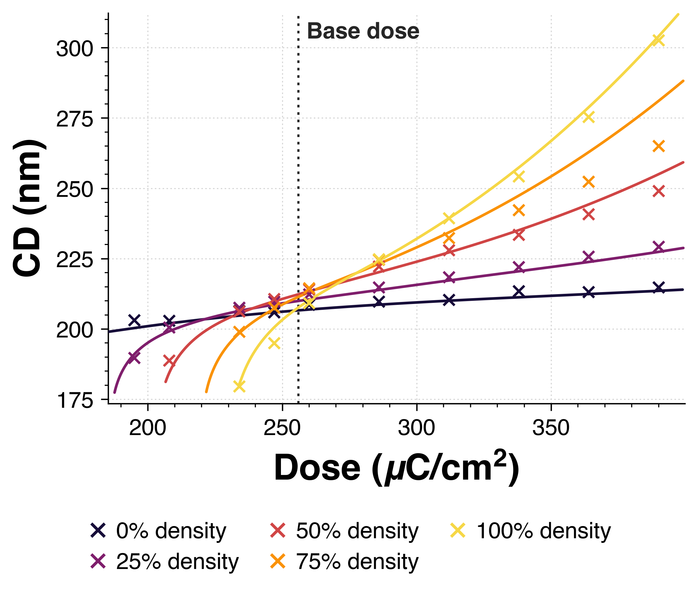
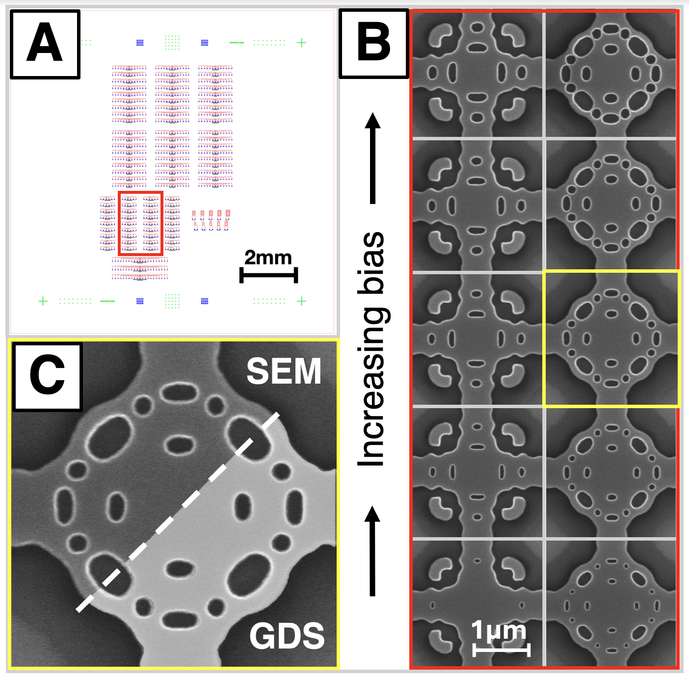
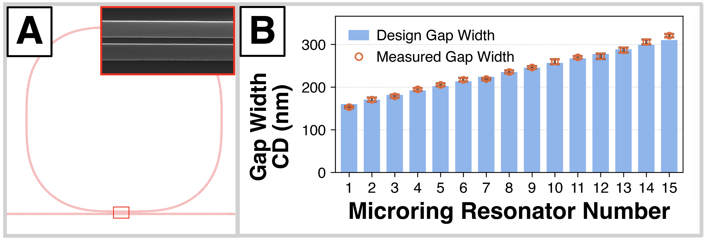
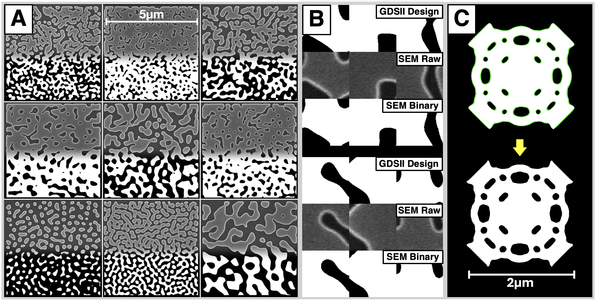

将一台退役的 Raith 电子束图形发生器改造为无人值守的关键尺寸扫描电子显微镜
摘要
学术机构电子束光刻（EBL）的基于设计的计量受限于低吞吐量成像。对于集成光子学而言，纳米尺度的结构变化会显著制约器件性能，因此扫描电子显微镜（SEM）是关键尺寸（CD）计量的标准工具，能够揭示光学测量无法获得的器件结构。晶圆尺度的手动 SEM 成像耗时巨大，会引入因操作人员而异的畸变，而且所得数据量过少，无法可靠地闭合纳米制造校准回路。下文详述一种利用学术洁净室现有硬件的方法：一套 GDSII 到 SEM 的软件工作流程，可将机构中退役的图形发生器改造为 CD-SEM，实现无人值守的图像采集以及高效的 CD 与线边缘粗糙度（LER）提取。本文以 Raith eLine Plus 演示了该方法，并预期其可推广至运行 Raith NanoSuite 的其他图形发生器。文中给出的结果展示了其在同一机构内的三种应用情形：加速校准两种光刻胶的工艺窗口；对集成光子器件开展芯片级计量以跟踪 CD 变化；以及为训练卷积神经网络以预测工艺畸变而进行的大规模数据集采集。该方法使得代工厂式的、计量驱动的工艺校准能够在学术洁净室中实现，并可推广到光子学之外的任何需要纳米尺度 CD 控制的 EBL 纳米制造中。
Preprint
关键词 扫描电子显微镜 电子束光刻 自动化计量 基于设计的计量 Raith eLine Plus 硅基集成光子学
1 引言
电子束光刻（EBL）中的计量工作流程依赖扫描电子显微镜（SEM）对结构进行自上而下的关键尺寸（CD）测量。在半导体制造和 EBL 代工服务中，基于设计的计量（DBM）工作流程将平面布局图与芯片/晶圆表面的物理结构对应起来，从而增强质量控制。在这些场景中，测量由关键尺寸扫描电子显微镜（CD-SEM）执行；这些设备可在晶圆尺度 [1]上自动对大型结构数据集成像，而 DBM 工作流程可直接根据设计数据 [2]设置这些成像配方。在共享纳米加工设施中，CD-SEM 的成本通常令人难以承受，因此计量依赖人工操作的 SEM。对于可使用商用纳米加工软件套件的设施，例如 GenISys ProSEM、Tracer 和 Beamer [3, 4, 5]，图像分析和工艺感知设计不再是实现最佳实践制造的瓶颈。根据我们的经验，学术洁净室面临的最大障碍是手动对样品成像所需的大量时间，因为手动 SEM 设置耗时，且图像质量在很大程度上取决于用户能力 [6]。尽管存在可为手动 SEM 镜筒增加由版图驱动的自动化的售后升级方案 [7]，下文展示如何利用设施中的现有硬件来缓解实现自动化成像工作流程的传统瓶颈。通过组合一台已被取代的 Raith eLine Plus 电子束（E-beam）图形发生器、图像分析软件 ProSEM [3]、工艺校准软件 Tracer [4] 以及自定义自动化脚本，我们在学术洁净室内实现了自动化 DBM 工作流程。
这是可行的，因为 Raith 电子束图形发生器与 CD-SEM 共享许多相同组件。二者均包含带有镜内/穿透透镜二次电子探测器的 SEM 镜筒 [8, 9]，这与 CD-SEM 用于高分辨率测量的穿透透镜检测相同 [1]。CD-SEM 测量的准确度用参考样品校准 [1]。类似地，Raith 图形发生器在带有棋盘格结构的标准校准芯片（“chessy”）上，借助激光干涉仪载物台完成写场对准与校正。它们保留在 eLine Plus 样品架上，用于为 EBL 对准图案生成写场，并用于校准 SEM 放大率、X 和 Y 缩放及畸变。结合样品本身的三点旋转与工作距离校正（第 2.1.3 节），通过图案发生器成像的每个扫描帧都在空间和焦点上得到校正，因而 eLine Plus 可作为功能等效的 CD-SEM 运行。eLine Plus 上的半自动成像可通过使用与图案生成相同的位置列表结构定义扫描例程来实现，但这些列表通常需要手动构建，并且是我们设施内实现自动化计量的最大瓶颈。
对于小数据集采集，用户报告称，在 eLine Plus 上手动构建成像位置列表通常比不采用自动化直接成像样品耗时更长（第 2.1 节）。Raith EBL 工具的原生自动化是为曝光而设计的 [10]，而我们未发现已有工作能直接从设计平面图生成用于无人值守成像的 Raith 位置列表。为此，我们提出 AutoSEM，这是一个开源、基于网页应用的程序，可将 GDSII 设计平面图转换为可直接扫描的位置列表。这使得在 Raith eLine Plus 上进行无人值守图像采集成为可能。采集到的图像被传入 GenISys ProSEM、Tracer 和 Beamer，用于后续曝光的工艺校准和邻近效应校正（PEC），从而在我们设施内形成自动化 DBM 工作流程。通过将用户关注点从在设备上手动成像转向在设计阶段定义扫描帧，我们实现了更快的培训、无论用户 SEM 操作技能如何都能获得一致的图像质量，以及计量工作流程的更广泛采用。软件与分析方法在第 2 节中详述。第 3 节展示了该工作流程在三个用例中的应用：两种 EBL 光刻胶的加速工艺校准；在设计阶段规划的硅光子器件的芯片级计量；以及支持利用卷积神经网络进行下一代工艺校准的大规模数据集采集。方法局限性、仍存在的开放挑战，以及在纳米制造领域推广的展望，将在第 4 节中讨论。
2 方法
以下介绍我们自动化 DBM 工作流的具体细节，详述软件架构与自动图像采集（第 2.1节），以及其与 GenISys 分析软件的集成（第 2.2节）。该工作流使用三类软件。第一类是 Raith eLine Plus 的原生软件 NanoSuite，并配有用于扩展功能的自定义脚本。第二类是为全自动完成扫描帧定位而开发的开源网页应用程序，第三类是商用 GenISys 软件 ProSEM、Tracer 和 Beamer，用于图像分析、工艺校准和图形化。本工作流中的结构使用 Raith EBPG5150 在 100 kV 下进行图形化。所有图像均采用 Raith eLine Plus 镜内二次电子探测器采集：加速电压 10 kV，光阑 30 m，探针电流 pA，工作距离 mm，并采用两点平均。
2.1 软件架构与图像采集工作流
2.1.1 Raith NanoSuite 中现有的半自动化功能
Raith eLine Plus 出厂时配备原生软件 eLine Plus（属于 Raith 的 NanoSuite）以及 ZEISS 开发的 SmartSEM。SmartSEM 是将该设备专门用作扫描电子显微镜（SEM）的用户界面（UI），而 eLine Plus 用于系统控制和图形生成。系统上的 SEM 图像通常用 SmartSEM 采集，但如果用户使用 eLine Plus 对样品成像，则可在扫描管理器中定义放大率、写场尺寸和成像条件固定的预置扫描帧。这提高了同一样品上图像的一致性。预置扫描帧图像还能受益于图形生成时所用的同一套写场装调（对准）和三点旋转/工作距离修正（第 2.1.3节）。在经过对准修正、写场校准良好的样品上，这种成像方式可可靠达到亚 10 nm 分辨率。对于三个用例（第 3.1、3.2、3.3节），所有图像均以 2 nm/px 的分辨率采集。
此外，eLine Plus 软件允许用户传入 JavaScript（.js）命令，以控制载物台移动和扫描帧成像的调度。这种调度以位置列表文件（.pls）结构实现，与调度图形生成所用的结构相同，其中曝光/图像的位置与已对准样品上的局部坐标相关联。我们与 Raith 合作编写了自动化脚本，并初步尝试将这些脚本集成到位置列表结构中，形成一套半自动成像协议。之所以称为半自动，是因为对设施用户而言，正确构建位置列表文件并非易事。手动将脚本指派到样品上正确的扫描区域，往往比不使用自动化直接对样品成像耗时更长。为此，我们开发了一种可移植的网页应用程序，可自动完成位置列表的构建，实现全自动、无人值守的成像。
2.1.2 用于自动化位置列表结构的自定义用户界面开发
网页应用程序AutoSEM（开源11 1 可从 https://github.com/wafgunn/AutoSEM 获取）通过读取用户的GDSII设计文件并自动生成位置列表，实现了用户友好的高吞吐量成像。AutoSEM代码库打包为单个HTML文件以便于移植，并设计为分为三个步骤的用户界面：GDSII设计文件导入、扫描帧分配与整理，以及指令导出（可从中下载就绪扫描的位置列表）。图1展示了AutoSEM在制造反馈回路中的位置。

GDSII 查看器允许用户拖放包含其纳米加工完整版图布局的设计文件，在单元之间导航，隐藏/显示层，并执行基本的版图查看器命令，以便在组织计量（精密测量）前预览设计。扫描框分配器允许用户从与 eLine Plus扫描管理器中存储的预设扫描框相匹配的列表中，将扫描框放置到其版图布局上。该应用将用户限制为预设扫描框，以确保设施内所有用户在成像期间获得良好对准的写场，从而使共用设备上的成像运行具有可重复性。图像质量取决于用户在校正像散 [6] 和写场未对准时的技能。我们认为，对精细特征光子器件进行准确成像需要 sub-10 nm 临界尺寸分辨率，因此用户之间的不一致会降低图像集的质量。其次，将用户限制为预设扫描框可实现工作流程标准化，其中可在原始 GDSII 版图布局的设计过程中定义设定尺寸的扫描框。用户会获得一个与设定扫描框尺寸相对应的层/数据类型查找表（层 500，数据类型 0–9）。这些特定层/数据类型上的框对象可由AutoSEM自动导入。如果用户的 GDSII 设计已在其希望成像的位置包含边界框，则可以手动导入这些框，并将该位置与任一预设扫描框关联。操作菜单用于将选定的扫描框放入命名组，使用户能够确定成像顺序，并在组名中传递标识性元数据。
放置所有所需扫描框后，用户可导出包含关键成像参数的指令。这些参数包括定义图像分辨率的像素数，以及任何线平均或帧平均。还可设置扫描间等待时间，以减少图像漂移误差。随后，用户导出一个格式完整的位置列表，其中包含所有扫描框和参数，可直接导入 eLine Plus软件。该位置列表中的所有扫描框，无论成像范围大小，均由中心坐标定义，图形发生器围绕该中心坐标进行扫描。扫描框的坐标系由用户 GDSII 设计版图布局的最大范围自动确定，装调（对准）标记坐标也以同一坐标系表示。这使用户能够创建带有全芯片或全晶圆成像扫描指令的位置列表，前提是用户在图形发生器上执行三点旋转/工作距离装调（对准）（第2.1.3节）。此步骤中的其他导出内容包括一个文本文件，其中包含扫描编号、中心坐标（）、扫描框尺寸、像素步长（m），以及扫描框组名的文本字符串，该字符串可包含附加说明或元数据。此外，用户还能导出最终的 GDSII 文件，其中同时包含原始设计版图布局和扫描框框对象。
2.1.3 在 Raith eLine Plus 图形发生器上的图像采集设置
在图形发生器上运行图像采集之前，需要进行三点装调（对准）程序，以定义新的局部坐标系并应用空间/焦点校正。eLine Plus装调（对准）在样品表面的三个非共线基准/装调（对准）标记——通常为十字形或 L 形图案——上取点，并将这些点与用户 GDSII 设计文件中的对应坐标配对。这可校正旋转、平移和轴缩放误差，校正精度达到标记位置的准确度。为校正任何样品倾斜，如果用户在装调（对准）期间确保每个标记处均清晰聚焦，软件会计算样品表面的倾斜焦平面，并为后续所有扫描插值工作距离校正（图 2）。到装调（对准）程序结束时，所有扫描帧位置均与样品表面的真实位置匹配，且这些位置处的所有图像均经过空间/焦点校正。装调（对准）后，可执行位置列表，图形发生器可无人值守地可靠采集所有图像。从 AutoSEM 导出的文本文件可用作图像集的查找表，简单的重命名脚本可将组名文本字符串中的所有必要信息包含到文件名中。

2.2 用于关键制造指标提取的批处理分析工作流
在自动采集与重命名之后，大量图像数据集被送入 GenISys 软件 ProSEM 进行批处理分析 [3]。在 ProSEM 中，用户可以定义希望分析的感兴趣区域（ROI）、这些区域内预期出现的特征类型，以及像素/纳米长度标尺。根据扫描电子显微镜（SEM）图像的 8-bit 灰度值，该软件能够对结构进行拟合与分析。批处理分析的一个常见例子是剂量相关的等焦分析，3.1 节将对此作更详细的讨论。当图像数据集导入 ProSEM 并选择“Lines & Spaces”结构预设后，软件会检查单条水平像素切片，并对线形图案的每条边缘拟合 sigmoid 函数。每个 sigmoid 函数的上渐近线被拟合到该像素行内的最亮值，并与线边缘相对应，这是由于 SEM 线扫描存在明亮的边缘辉光 [11]。每个函数的下渐近线被拟合到远离边缘处的背景灰度。每个 sigmoid 的拐点被视为单行像素内各线边缘的中心点。ProSEM 对 ROI 的每一行像素进行逐行扫描，并对所有拐点拟合一条直线平均线，以近似线边缘和平均线宽。将该宽度与原始设计相比较，即可估计与剂量相关的 CD 变化。此外，拟合拐点相对各条直线平均边缘的标准差的三倍给出了 LER 的估计值（）。在不同密度的线与空图形阵列上拟合大量 ROI，便可提取关键工艺指标。
3 结果
我们自动化 DBM 工作流程的结果以三个应用案例给出，每个案例服务于纳米加工设施中电子束光刻（EBL）用户的一项不同任务。应用案例一（第 3.1 节）详细介绍了两种不同电子束光刻胶的加速工艺校准，其中包括用于优化光刻胶配方的等焦分析。应用案例二（第 3.2 节）展示了硅基光子器件的芯片尺度成像，实现了可跟踪亚 10 nm 结构变化的计量。应用案例三（第 3.3 节）展示了基于机器学习的制造工艺变化预测与校正，这是硅基光子设计中的一种新兴方法 [14, 15]；如今借助大规模、无人值守的数据集采集，该方法已可推广到制造工艺配方中的各个单独步骤。将这些案例联系在一起的，是与用户驱动的手工流程相比，我们的自动化 DBM 工作流程所带来的显著加速与重复性。
3.1 应用案例一：通过系统化参数扫描实现加速的电子束光刻工艺校准
要在电子束光刻胶中写出准确的图形，必须制定工艺配方；而要在亚 10 nm 尺度上写出一致性良好的掩模，则必须对该配方持续进行校准。校准方法跟踪各个会导致不可容忍图形畸变的步骤与参数，这些畸变源自基底清洁度、光刻胶膜厚、曝光前/后烘烤条件、显影以及刻蚀条件。上述畸变，加上由图形化参数（前向散射、束流与光阑、束流步距）以及工具伪影（束流聚焦）引起的畸变，其卷积被作为有效工艺模糊（blureff）来处理 [12, 13]。最佳实践校准跟踪临界尺寸（CD）随剂量和图形密度的变化，这称为等焦分析 [12, 13]。等焦分析通过制作填充因子不同的线条与间隙测试结构来进行。为减小区域之间的背散射，每个区域与其相邻区域之间相隔大于 ，其中 是该光刻胶/基底组合中背散射电子的横向射程。这些图形从单线条结构（ 密度）一直到只含单个间隙结构的完全填充区域（ 密度），并包含中间的线条与间隙填充因子（25%, 50%, 75%）。在一系列剂量下对线宽进行成像，即可得到各图形密度的 CD-剂量曲线（曝光宽容度）[13]。

3.1.1 AR-P 6200.09 与 ma-N 2403 的等焦校准
本节详述我们的自动化 DBM 工作流程如何加速并扩展等焦分析。下文给出在绝缘体上硅（SOI）上对两种电子束光刻（EBL）光刻胶进行自动校准的结果：Allresist GmbH 的 AR-P 6200.09 [16]，以及 micro resist technology GmbH 的 ma-N 2403 [17]。
对每种光刻胶，先通过对比度曲线分析确定清除剂量/凝胶剂量。随后按 Lopez 等人 [13] 提出的方法，在由此得到的剂量范围内完成等焦研究。在 m2 曝光区域内，沿固定剂量范围制作五种不同密度（、25%、50%、75%、）的线条与间隙结构，并采用多种不同的光阑与束流配置。所有这些配置均制作在同一芯片上，从而减小显影与刻蚀条件的批次间差异。芯片上各曝光区域之间至少间隔 m 的距离（），以减小相邻曝光带来的背散射。在完成显影、刻蚀和去胶后，样品在 Raith eLine Plus 内进行三点对准，以采集图像（第 2.1.3 节）。根据密度结构的 GDSII 版图，AutoSEM 生成一份包含所有制作条件的芯片级位置列表，并传送给 eLine Plus。借助该位置列表，可在 小时内以 2 nm/px 分辨率无人值守地采集 400 m2 图像。利用 AutoSEM 生成的查找表，图像被重命名为包含束流条件、剂量与密度相关元数据的名称，并解析至 ProSEM。从所有图像中提取关键尺寸（CD）与线边缘粗糙度（LER）测量值，传给 GenISys Tracer，以拟合估计工艺模糊、工艺偏置和等焦剂量。
对 AR-P 6200.09 和 ma-N 2403 的曝光宽容度均显示出与剂量相关的临界尺寸（CD）变化。为简洁起见，AR-P 6200.09 的结果示于图 3。这些宽容度表明，对于五种不同图形密度，CD 偏置随剂量变化。对每种密度，考虑了覆盖高分辨率图形化常用条件的束流和光阑范围。保守估计误差为 nm，其中计入了 2 nm/px 的扫描电子显微镜（SEM）像素尺度。在 100 kV 和最高 1 nA 的束流下，理论束斑尺寸可在图 3 所示每对光阑之间变化 1.5–2.5 倍（在 200 和 500 pA 时为 200/300 m，在 1000 pA 时为 300/400 m）。200 m、300 m 和 400 m 光阑之间趋势的不变性表明，有效模糊 blureff 主要由工艺贡献主导，而不是由束斑尺寸主导。Tracer 曲线拟合支持这一点（图 4），得到估计的工艺模糊为 nm，相比之下，在束流最高 1 nA 时，各对应光阑的束斑尺寸分别为 nm、 nm 和 nm。22 2 束斑尺寸由我们的纳米加工设施通过实验测定。 除工艺模糊外，Tracer 还估计出等焦剂量为 C/cm2，以及引入的工艺偏置为 nm。由于束流与光阑之间的不变性，这在围绕等焦剂量的这些图形化条件下提供了稳健的工艺窗口。将相同工作流程应用于 ma-N 2403 时，发现推荐等焦剂量为 C/cm2，工艺模糊为 nm，工艺偏置为 2 nm，且与相同的束流和光阑图形化条件无关。

借助该工作流程，可在单个芯片上写入多种图形化条件，并在 Raith 图形发生器上成像，同时自动生成关联的位置列表。图像被前馈至 ProSEM，其结果用于借助 Tracer 和 Beamer 对未来制造实施设计校正。我们估计，这将工作流程的时长从三天缩短到不足一天。这是成像显著加速且无人值守的结果，使用户能够专注于分析以及对未来设计的前馈校正。
3.2 用例 II：芯片级结构变异映射用于质量保证与质量控制
下一个用例说明，借助AutoSEM进行自动位置列表结构化，如何使计量（精密测量）从设计阶段就纳入纳米制造流程，以对片上器件进行质量保证和质量控制。该工作流程能够更可靠地跟踪逆设计光子器件和光子微环谐振器的结构变异性。在这两种情况下，纳米尺度的尺寸变化都会影响性能，使滤波器和谐振器的谐振波长发生偏移[18]。针对孔直径发生 nm 变化的情况，已在仿真中分析了基于孔的逆设计光子交叉结构的容差[19]。


一个光子芯片的示例平面布局图见图 5A，其包含 103 个独立组件和 1001 个光栅耦合器结构。所有 1104 个片上结构的计量（精密测量）可在 GDSII 设计阶段进行规划。光学测试完成后，AutoSEM 会生成可供图像采集使用的位置列表。图 5A 中红框标出、并在图 5B 中展示的，是一个包含 10 个光子交叉结构的样本；这些交叉结构涵盖两种不同的器件设计，并对应五个不同的内部孔偏置值。它们旨在测试逆设计光子交叉结构的性能灵敏度。可利用在明亮边缘信号与背景灰度级之间拟合 S 形函数的边缘检测算法（第 2.2 节），生成器件的二值掩模，并比较设计与器件之间的关键尺寸变化（其中一个交叉结构在图 5C 中以分开的 SEM/GDSII 视图展示）。这是逆设计器件内部特征的一项特殊要求，因为纳米尺度的结构变化会影响传输和串扰 [14, 15, 19]。
在图6A中，展示了微环谐振器（MRR）的设计，插图显示了MRR耦合间隙的图像。对于本研究中的MRR，耦合间隙在15个不同取值（MRR1–MRR15）上扫描以测试性能。用户将GDSII设计版图输入AutoSEM，对每个耦合间隙进行成像，并由ProSEM提取各间隙的临界尺寸与线边缘粗糙度变化。每个耦合间隙的设计宽度与测量宽度可见图6B。
我们的自动化DBM工作流程具有预设扫描条件，可提高逐图像可靠性，加速寻找对制造变化具有容忍度的逆向设计结构，并加速亚10 nm尺度结构的微调。此外，能够对所有片上结构成像，提升了学术纳米制造设施中原本认为可达到的计量标准，使光学性能的任何趋势都能直接与制造过程中的变化相关联。我们认为，这种水平的计量自动化可以很容易地从芯片尺度扩展到晶圆尺度，采集时间将不再是计量的限速因素。
3.3 用例 III：面向基于卷积神经网络的工艺预测 & 校正的大规模数据集采集
我们接下来展示该工作流程的一个有力用例，它拓宽了学术纳米制造设施中工艺校准的范围。这涉及在制造结构的SEM图像上训练卷积神经网络，其依据是McGill University与National Research Council Canada开展的结构变异性预测与校正研究[14, 15]。虽然他们的模型是在由代工厂EBL服务制造并成像的数据集上训练的[14]，但我们的自动化成像工作流程使学术洁净室也能获得这一能力。通过代工厂服务可以进行此类训练，但每次迭代耗时更长且成本高昂。代工厂制造并测量测试结构，然后返回数据。设计人员随后训练模型并生成校正后的版图，再将其送回代工厂进行制造。将制造与计量保留在同一设施内可缩短这一循环。我们还提出，我们的制造预测可以超越固定代工厂工艺的光刻畸变，涵盖更复杂的工艺步骤，例如光刻胶回流。

为了探究回流引起的结构变化的影响，通过薄膜椭偏测量确定 Zeon Corp. 的 ZEP520A 光刻胶的玻璃化转变温度（Tg），并将其与制造商给出的 105 ∘C 值 [20] 进行比较。同一技术报告给出了 100–140 ∘C 的显影后烘烤，而我们发现 105 ∘C 下回流可忽略。根据这些测量结果，我们校准了 140 ∘C 下的回流工艺配方，该配方可降低纳米加工器件中的线边缘粗糙度，代价是高达 nm 的结构变化。这与利用热回流降低波导和微环谐振器制造中的边缘粗糙度的做法一致 [21]。虽然已经建立了热回流模型 [22, 23]，但我们没有发现针对任意电子束光刻（EBL）版图的、回流引起结构变化的算法预校正，可与采用邻近效应校正（PEC）对邻近效应畸变进行校正的方法相比。我们认为，这是因为化学性质、厚度、剂量、温度和回流时间都会各自影响回流后的几何形貌 [21, 23]。我们没有尝试从物理上对该效应建模，而是在单个硅芯片上，于 m2 的覆盖区内、跨 30 种不同的剂量/电流组合制作 2700 个测试结构，并对这些图案在两种不同时间间隔下进行回流。该回流在 140 ∘C 的设定烘烤温度下，以 60 s 和 90 s 的回流时长完成。这些图案按照 Gostimirovic 等人 [14] 所述方法，由对噪声进行低通和带通滤波生成，可见于图 7A。在特定的剂量/电流组合内，有 90 个不同的测试结构，其形成的岛状结构的面积和周长变化很大，以便捕捉各种可能特征下的回流效应。
生成这些测试图案时，扫描框已包含在原始 GDSII 设计文件中，可直接传入 AutoSEM。对于每个回流持续时间，以每种 90 个测试图案探索六种不同剂量（250–300 C/cm2，步长为 10 C/cm2），条件为 1 nA 束流和 300 m 光阑；每个回流持续时间得到 540 幅不同测试图像，总计 1080 幅。每个图案在 8 m 扫描框中以 2 nm/px 成像，条件如第 2.1.3 节所述。无人值守图像采集耗时 小时，自动后处理为训练准备图像。在预设扫描条件下，设计结构与图案化结构之间可可靠观察到高达 nm 的回流结构变化。为制备卷积神经网络，图像被切成重叠的 128128 px 图块，用于二值化和训练（小样本可见图 7B）。该训练结果可见图 7C，其预测了 2 m 逆向设计光子交叉结构的关键尺寸（CD）展宽（上图）。这些展宽结果（上图，绿色）随后可用于应用“预校正器”模型 [15, 24]，从而提出制造前设计修改（下图），使所得回流可将交叉结构畸变为原始预期设计。
没有自动化 DBM 工作流程，为网络训练构建大型可靠数据集对于学术纳米制造设施而言是不可行的。当在总计 2700 个测试结构上改变 30 种不同图案化参数组合时，手动对这些结构成像将需要经验丰富的用户连续成像数周才能采集该数据集。在多个不同图案数据集上探索多个温度将需要连续成像数月。
4 讨论
4.1 闭合制造反馈回路
自动化且全面地遍历图案化条件可高效闭合制造反馈回路，并支持最佳实践的工艺校准。自动化 DBM 工作流程还使学术洁净室设施内的所有用户都能使用该方法，无论其工艺校准经验如何。通过在设计阶段引入扫描框位置，用户可将全面计量纳入其纳米制造流程的结构中。自动化、无人值守的图像采集鼓励用户不仅在选定的片上器件处采集图像，还对全部相关设计区域完整成像。一旦成像不再是瓶颈，就可设计和制造大型测试结构数据集，以研究光刻胶回流等复杂工艺畸变。
4.2 方法学的局限与开放挑战
当前该方法的局限性在于，用户需以高标准执行三点装调（对准），才能正确进行旋转/工作距离校正。不一致会导致整个采集数据集出现系统误差。激光高度传感作为当前 Raith 图案发生器上的可选功能提供[8]，但未配备于本方法所基于的基础型 eLine Plus 型号；该功能可消除这一部分局限。它可校正工作距离、焦点和样品倾斜[10]，但不能校正面内旋转或平移，后者仍需要对样品标记执行三点装调（对准）。正在探索的一种未来适配方式，是利用 Raith NanoSuite 中的自动对准标记检测[8]。将自动对准标记检测脚本纳入现有位置列表工作流，可实现芯片/晶圆三点装调（对准）的自动化。将对准标记检测脚本与激光高度传感相结合，可确保在 eLine Plus 分析的任何样品上，每次数据集采集都一致地应用相同的旋转/工作距离校正。这样，采用该自动化工作流的学术洁净室可选择在流程中承担更多管理角色。这些设施不仅可维护扫描帧和经装调（对准）校正的写入场，还可维护用户在订购全芯片/晶圆计量时其设计平面图中必须包含的自动计量标记的尺寸和位置。这将显著提高自动化程度，把瓶颈从培训用户掌握整个成像流程，转变为仅培训他们掌握装载/卸载程序。
4.3 可推广的工作流与展望
我们相信，在 Raith 的协调下，该工作流可在任何配备 Raith NanoSuite 的图案发生器上实现。经过少量修改，它也可在任何具备旋转和工作距离校正以及应用编程接口（API）支持、可扫描位置列表的扫描电子显微镜（SEM）上运行。Raith eLine Plus 只是该工作流已应用过的一台已被取代的图案发生器。
5 结论
最后，我们预期该工作流可推广到本方法所述硅光子学用例之外，并应用于几乎任何纳米加工。在我们设施内，用户正使用该工作流检查约瑟夫森结的临界尺寸。结面积以及限定该面积的纳米级线宽的变化，会改变超导量子比特的频率，而约瑟夫森结是超导量子比特的一个组成非线性元件[25, 26]。对数千个结进行自动 SEM 线宽计量已被用于建立结线宽与电阻之间的关系[27]，我们的工作流可用于改进该计量以及许多其他纳米加工应用的计量。
我们提出一种自动化 DBM 工作流，可将一台已被淘汰的 Raith eLine Plus 图形发生器改造为无人值守的临界尺寸扫描电子显微镜（CD-SEM），并使用AutoSEM自动完成基于 GDSII 设计版图的位置列表构建，同时使用 GenISys 软件提取关键制造指标。用例 I 展示如何在小时内无人值守采集 400 幅等焦测试结构图像，并将其传入ProSEM和Tracer，以估计两种电子束光刻（EBL）光刻胶的等焦剂量、工艺模糊和工艺偏置。用例 II 强调如何在设计阶段组织对硅光子芯片上全部 1104 个结构的计量（精密测量）。用例 III 表明，对于每个回流时长，从 2700 个测试图案阵列中无人值守采集的 540 幅不同图像，可用于训练卷积神经网络，以预测回流引起的结构变化。主要限制在于用户需以高标准执行三点装调（对准）；目前正在探索将 Raith 的自动装调（对准）标记检测脚本整合到位置列表工作流中，以实现该步骤的自动化。我们预见，未来各设施将采用这一自动化工作流，并针对各自系统进行调整，以帮助用户利用现有设施硬件，为其纳米制造实现最佳实践计量（精密测量）。
致谢
我们谨此承认昆士兰大学所在的土地的传统所有者——Turrbal 和 Jagera 人民。我们感谢昆士兰大学显微与微分析中心的 Microscopy Australia 所提供的支持，并说明本研究使用了 NCRIS 支持的澳大利亚国家制造设施（ANFF）昆士兰节点。最后，作者希望将本文献给已故的 Roger Wepf，他对显微学的热情是推动本研究的动力。
WG、HC、DP、FG、MR、AGW 参与了论文起草。WG、HC、ZD 参与了数据采集。WG、HC、DP、FG、LH、ZD 参与了数据分析。WG、HC 创建了AutoSEM，LH 创建了ProSEM/Tracer批量分析与可视化脚本，KM 提供了 JavaScript eLine Plus 自动化后端脚本。NT 提供了Beamer、ProSEM和Tracer工艺。工作流开发由 RW、HC、ZD 发起。本研究在编写AutoSEM时使用了 Anthropic 的 AI 模型 Opus 5.5，并使用 OpenAI 的模型 Codex 进行ProSEM自动化脚本编写和批量分析。Opus 5.5 用于数据可视化、校对和稿件起草过程中的改写。
资助
WG 获得昆士兰州政府量子与先进技术奖学金，并由昆士兰州政府环境、旅游、科学与创新部（DETSI）资助。AGW 获得澳大利亚政府资助的澳大利亚研究理事会桂冠研究员基金（Laureate Fellowship，FL210100045）。本研究部分由澳大利亚政府通过澳大利亚研究理事会工程量子系统卓越中心（EQUS，CE170100009）资助。
利益冲突
我们知悉 KM（隶属于 Raith Asia Ltd）和 NT（隶属于 GenISys GmbH）的商业利益，文中使用或描述了其硬件和软件（eLine Plus、EBPG5150、NanoSuite、ProSEM、Tracer、Beamer），并引用了其供应商材料。所有其他作者声明无利益冲突。
References
- [1] (2018) Metrology for the next generation of semiconductor devices. Nature Electronics 1 (10), pp. 532–547. External Links: Document Cited by: §1, §1.
- [2] (2023) Metrology. IRDS 2023 Update Institute of Electrical and Electronics Engineers. Note: doi:10.60627/FF6X-D213 External Links: Document, Link Cited by: §1.
- [3] (2026) ProSEM: Automated Pattern & Process Metrology. Note: https://prosem.genisys-gmbh.com/features.html Cited by: §1, §2.2.
- [4] (2026) TRACER: Electron scattering and process effects quantified. Note: https://www.genisys-gmbh.com/tracer.html Cited by: §1, §2.2.
- [5] (2026) BEAMER: Electron- and Laser-Beam Lithography Software. Note: https://www.genisys-gmbh.com/beamer.html Cited by: §1, §2.2.
- [6] (2024) Automatic beam optimization method for scanning electron microscopy based on electron beam Kernel estimation. Communications Engineering 3 (1), pp. 82. External Links: Document Cited by: §1, §2.1.2.
- [7] (2024) InSPEC: Integrated SEM Metrology and Inspection. Note: https://www.genisys-gmbh.com/products/inspec.html Cited by: §1.
- [8] (2026) PIONEER | E-LINE | RAITH150: Multifunctional system family for maximum versatility. Note: https://raith.com/products/multifunctional-ebl/ Cited by: §1, §4.2.
- [9] (2026) ProImage. Note: https://raith.com/technologies/proimage Cited by: §1.
- [10] (2026) AutoRun – Automated EBL. Note: https://raith.com/technologies/autorun/ Cited by: §1, §4.2.
- [11] (2019) Conventional vs. model-based measurement of patterned line widths from scanning electron microscopy profiles. Ultramicroscopy 206, pp. 112819. External Links: Document Cited by: §2.2.
- [12] (2017) Isofocal dose based proximity effect correction tolerance to the effective process blur. Journal of Vacuum Science & Technology B, Nanotechnology and Microelectronics: Materials, Processing, Measurement, and Phenomena 35 (6), pp. 06G505. External Links: Document Cited by: §2.2, §3.1.
- [13] (2018) On the trends and application of pattern density dependent isofocal dose of positive resists for 100 keV electron beam lithography. Journal of Vacuum Science & Technology B, Nanotechnology and Microelectronics: Materials, Processing, Measurement, and Phenomena 36 (6), pp. 06JA05. External Links: Document Cited by: §2.2, §3.1.1, §3.1.
- [14] (2022) Deep Learning-Based Prediction of Fabrication-Process-Induced Structural Variations in Nanophotonic Devices. ACS Photonics 9 (8), pp. 2623–2633. External Links: Document Cited by: §3.2, §3.3, §3.3, §3.
- [15] (2023) Improving Fabrication Fidelity of Integrated Nanophotonic Devices Using Deep Learning. ACS Photonics 10 (6), pp. 1953–1961. External Links: Document Cited by: §3.2, §3.3, §3.3, §3.
- [16] (2026) E-Beam Resist AR-P 6200 series (CSAR 62). Note: https://www.allresist.com/portfolio-item/e-beam-resist-ar-p-6200-series-csar-62/ Cited by: §3.1.1.
- [17] (2026) ma-N 2400 series – Negative Tone Photoresist Series. Note: https://microresist.de/en/produkt/ma-n-2400-series/ Cited by: §3.1.1.
- [18] (2018) Silicon Photonics Circuit Design: Methods, Tools and Challenges. Laser & Photonics Reviews 12 (4), pp. 1700237. External Links: Document Cited by: §3.2.
- [19] (2024) Inverse-designed 6 6 waveguide crossing for a Benes-based network. Optics Express 32 (24), pp. 42908. External Links: Document Cited by: §3.2, §3.2.
- [20] (2003) ZEP520A Technical Report, Ver. 1.01. Note: https://www.nanophys.kth.se/nanolab/resists/zep520a-7-2.pdf Cited by: §3.3.
- [21] (2023) Thermal Reflow Simulation for PMMA Structures with Nonuniform Viscosity Profile. Polymers 15 (18), pp. 3731. External Links: Document Cited by: §3.3.
- [22] (2019) Neural network-based model of photoresist reflow. Journal of Vacuum Science & Technology B, Nanotechnology and Microelectronics: Materials, Processing, Measurement, and Phenomena 37 (6), pp. 061604. External Links: Document Cited by: §3.3.
- [23] (2024) Contact Hole Shrinkage: Simulation Study of Resist Flow Process and Its Application to Block Copolymers. Micromachines 15 (9), pp. 1151. External Links: Document Cited by: §3.3.
- [24] (2025) SEMU-Net: A Segmentation-Based Corrector for Fabrication Process Variations of Nanophotonics with Microscopic Images. In 2025 IEEE/CVF Winter Conference on Applications of Computer Vision (WACV), pp. 1528–1536. External Links: Document Cited by: §3.3.
- [25] (2020) Improving wafer-scale Josephson junction resistance variation in superconducting quantum coherent circuits. Superconductor Science and Technology 33 (6), pp. 06LT02. External Links: Document Cited by: §4.3.
- [26] (2024) Wafer-scale uniformity of Dolan-bridge and bridgeless Manhattan-style Josephson junctions for superconducting quantum processors. Quantum Science and Technology 9 (2), pp. 025006. External Links: Document Cited by: §4.3.
- [27] (2023) Improving Josephson junction reproducibility for superconducting quantum circuits: junction area fluctuation. Scientific Reports 13 (1), pp. 6772. External Links: Document Cited by: §4.3.